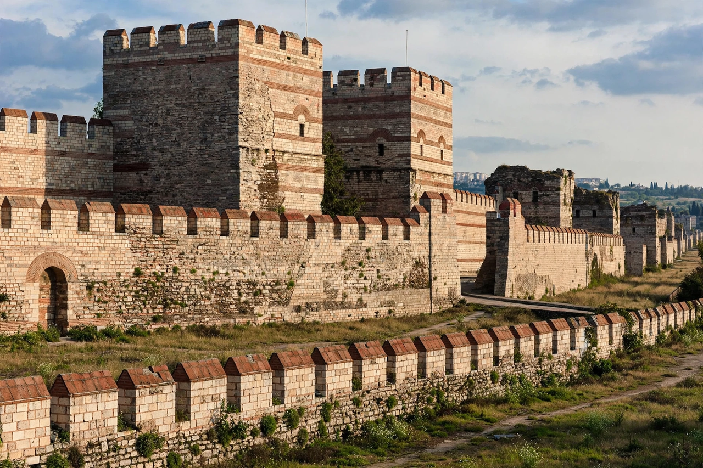

Fall of Constantinople

The Theodosian Walls of Constantinople, showing the triple lines of defence
The Fall of Constantinople was the capture of the Byzantine Empire's capital by the Ottoman Empire on 29 May 1453, after a siege of fifty-three days. The young sultan Mehmed II, with an army of perhaps 80,000 men, enormous bombards cast by the founder Orban, and a fleet that he famously hauled overland into the Golden Horn, overwhelmed the city's ancient Theodosian Walls and its some 7,000 defenders under the Emperor Constantine XI, who died fighting. The fall ended the Byzantine Empire — and, conventionally, the Middle Ages — and made Constantinople (Istanbul) the capital of the rising Ottoman Empire.
The siege
Mehmed prepared meticulously: the fortress of Rumeli Hisarı ('throat-cutter') on the Bosphorus, a great army, and cannon including a 27-foot bombard hurling 600-pound stone balls. From 6 April 1453 the city was bombarded and assaulted; the great chain across the Golden Horn was outflanked when Mehmed transported some 70 ships over greased timbers into the harbour. On the night of 28–29 May, after a day of rest and prayer on both sides, wave attacks exhausted the defenders; a small unlocked gate (the Kerkoporta, in some accounts) and overwhelming pressure at the walls carried the city by dawn.
Aftermath
After three days of sanctioned plunder, Mehmed entered the city, converted Hagia Sophia into a mosque, and set about repopulating and rebuilding his new capital, guaranteeing the Orthodox Church under Patriarch Gennadios. Greek scholars fleeing west (some before 1453, more after) fed the Italian Renaissance with manuscripts and learning. Constantinople's fall shocked Christendom, closed the Black Sea to its rivals, and confirmed Ottoman dominion of the Balkans and Anatolia for centuries.